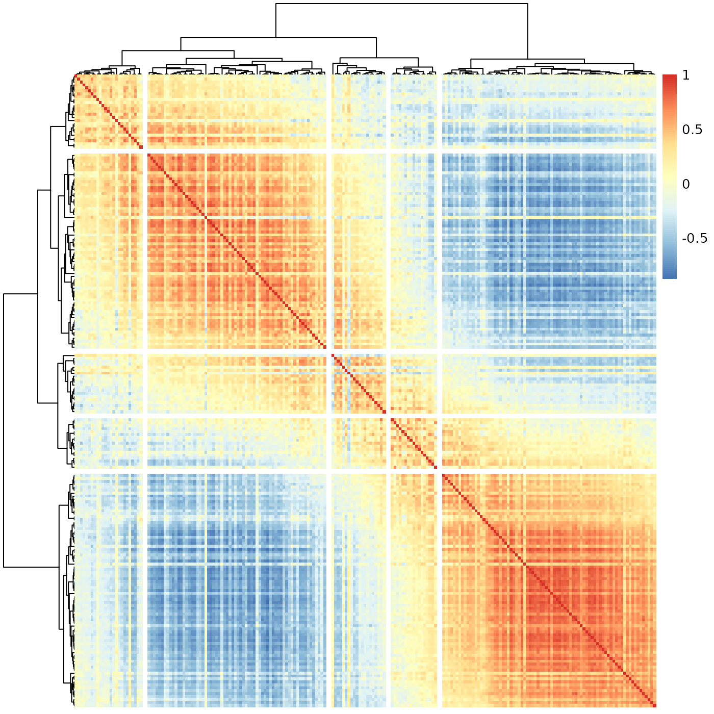

Analyzing meristems data
Oren Ben-Kiki
2020-08-13
meristems.RmdThe Problem
Suppose we have some data that compares some elements. Often this compares all the pairs of elements from some set, but sometimes pairs of elements from two different sets. In the concrete example used here, each element is a batch of ~1000 tomato meristem cells, which we have the combined RNA sequencing data for.
We want to visualize and understand the similarities between the elements. In our case, we have cell batches that we know were sampled at different times during a fast development process, and are interested in estimating how far along this process each batch is.
Naively, we can correlate the RNA profiles of the batches, getting a matrix where each entry tells us, for a specific pair of batches, how similar they are to each other. To get a non-negative similarity measure, we also change all negative correlation values to zero.
To load this meristems similarity matrix (and the slanter functions), write:
The next step would be to visualize this data. R helpfully gives us the pheatmap function, which will (by default) also cluster the data such that similar batches would be placed near each other. That is, in theory, we would not only get us a nice visualization, but we can hope to use this to obtain some meaningful order of the batches, which might map to a position along the development process we want to analyze.
So, we try:
pheatmap::pheatmap(meristems, show_rownames=FALSE, show_colnames=FALSE)At a first glance, this seems to indicate there are two very sharply distinguished sub-groups of batches, with a third mixed group. We know the batches were sampled from a continuous process, and biological processes are never this clean. We definitely can’t use this to estimate the position of each batch along some development process.
Perhaps the problem is with the clustering? We could invoke pheatmap without any clustering at all. This would preserve the data’s order; if we had an a-priori order, this would be exactly what we’d need to do to visualize the data. However, in our case, there is no such a-priori order - it is exactly that which we are trying to extract from the data. That is, if we try:
pheatmap::pheatmap(meristems, show_rownames=FALSE, show_colnames=FALSE, cluster_rows=FALSE, cluster_cols=FALSE)This most definitely is not what we want to see.
So, what went wrong? It turns out, our the data is fine. The problem is with the method we used to visualize/analyze it.
To understand the root problem, consider a hierarchical clustering algorithm given the numbers 1, 2, 3, 4 to cluster. We expect it to group the two low values together, then the two high values, and combine them to a final ( (1, 2), (3, 4) ) tree. In practice, however, such algorithms don’t care about the internal order within each tree node. That is, the algorithm would be just as happy giving us the tree ( (4, 3), (1, 2) ), which is technically correct, but is not the best kind of correct.
Amplify this problem to hundreds, or thousands, of clustered elements, and it is obvious in retrospect that we can’t expect hclust (and therefore pheatmap) to solve our problem. Enter “slanted matrices” to the rescue.
Slanted Matrices
Technically, a “slanted matrix” is a matrix which is reordered such that its highest values are as close to the diagonal as possible. This, in theory, should give us a clearer indication of the overall structure of the similarity data. Ignoring clustering for a moment, we therefore try:
sheatmap(meristems, order_data=similarity, show_rownames=FALSE, show_colnames=FALSE, cluster_rows=FALSE, cluster_cols=FALSE)This is exactly the same data as before.
Implementation notes:
Internally, this is implemented by the slanted_orders function, which repeatedly sorts the rows by the index of their “center of mass” column, and then the columns by the index of their “center of mass” row, until the system stabilizes. This is pretty fast for small data (e.g. up to N=1000 batches as in here) but grows (roughly) at a rate of (N log N)^2, so it may take a long while when ordering several thousands of elements. That said, displaying a heatmap with many thousand rows and columns isn’t very practical anyway.
This is not restricted to the square symmetric matrix one gets from computing correlations. It will also work just as well for a rectangular or an asymmetric similarity matrix.
The sheatmap function wraps all this (with additional functionality described below), similarly to the way pheatmap wraps the unordered hclust functionality.
The similarity data used for reordering must contain only non-negative values. Here we are showing correlation data, which can be negative. To overcome this we have chosen to set all negative correlation to zero, and we use the order_data which allows displaying the original (possibly negative) data while ordering by another (non-negative) data. Clustering (described below) is always done on the original data.
Reordered Clustering
What if we still want to see the cluster structure of our data? The sheatmap function provides two main options to do this, with different trade-offs.
If we have an a-priori clustering of the data, we can pass it to sheatmap (in the same way as we pass it to pheatmap, e.g. cluster_rows=hclust(...)). In this case, sheatmap will preserve the clustering, but at each node will pick the best order of the two sub-trees so that the end result will be the “best” slanted order.
That is, if we again consider the “technically correct” clustering tree ( (4, 3), (1, 2) ), and the ideal order 1, 2, 3, 4, then sheatmap will use the reorder_hclust function to give us the equivalent clustering tree ( (1, 2), (3, 4) ). In general, however, one can’t always get exactly the ideal order; reorder_hclust does the best it can.
We don’t have an a-priory clustering, but we did get one from pheatmap (that is, hclust). We might reasonably assume the only problem is not with that tree as of itself, but just with the fact it is essentially in a random order. Assuming all this, we can ask sheatmap to use the same hclust as pheatmap, and merely reorder it for improved visualization, by writing:
sheatmap(meristems, order_data=similarity, show_rownames=FALSE, show_colnames=FALSE, oclust_rows=FALSE, oclust_cols=FALSE)
Better - we do see there’s a transition between two states, but it is more blocky than the smooth transition we have seen before, which seems a better fit for the continuous biological process we wish to capture.
Still, in some cases the unconstrained hclust clustering might be superior, or we may have some other a-priori clustering we wish to preserve. In such cases, this approach would allow us to visualize this clustering in the “best possible” way.
Ordered Clustering
The default behavior for sheatmap is to use oclust instead of hclust, that is generate a clustering tree which is constrained to be compatible with the “ideal” slanted order. Thus, we can replace the simple use of pheatmap with the simple use of sheatmap:
sheatmap(meristems, order_data=similarity, show_rownames=FALSE, show_colnames=FALSE)
Much better - here we not only the see the clear gradient as before, but also that it splits naturally to a few phases (that smoothly transition from one to the next). We can highlight this by using the cutree flags:
sheatmap(meristems, order_data=similarity, show_rownames=FALSE, show_colnames=FALSE, cutree_rows=5, cutree_cols=5)
Implementation notes:
Internally, this is implemented by the oclust function.
In general hierarchical clustering of elements (rows or columns in our case) tries to create a binary tree such that the more similar two elements are, the closer they are in the tree. The twist in ordered clustering (as implemented by oclust) is that the elements are ordered, and each group of elements clustered under any tree node must be a contiguous range of such elements.
Visually this means that if we draw the final clustering tree on top of the ordered elements, there would be no edge crossings. This makes ordered clustering a natural addition to the slanted matrix visualization.
That is, normally (as in pheatmap), an unconstrained hierarchical clustering is done first, and the matrix visualization order is chosen to be compatible with the clustering tree. Here (in sheatmap using oclust), we do the opposite - we first order the elements for the slanted matrix visualization, and then find a compatible clustering tree to go with it.
In principle it is possible to adapt any clustering method to include an ordering constraint. We chose to adapt Ward’s method (both ward.D and the default ward.D2 are supported). In this method, the algorithm starts with each element on its own, and merges the two elements such that the total variance within the merged node is minimized. It recursively merges groups of elements (minimizing the variance each time) until obtaining the full clustering tree.
The general Ward’s method can pick any two element groups to combine at each step. In contrast, the ordered oclust variant can only choose adjacent element groups, trusting the a-priori order to have placed similar elements adjacent to each other. This makes the algorithm much faster, which allows for a practical pure R implementation. The full Ward’s method is slower, so requires a FORTRAN implementation.